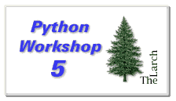

Papers and Presentations presented at Python Workshop 5
Additions or corrections to this list should be sent to mclay@python.org.Session 1: Open Forum on Python Extensions
- Title:
- Steering Object-Oriented Computations with Python
- Author:
- T.-Y. Yang
- Organization:
- Lawrence Livermore National Laboratory
- Email:
- yang4@llnl.gov
- Abstract:
- In this progress report we describe our current approach to steering C++ computations with a Python shell. Our experiments have included combining Tk interfaces with scripting, Python on parallel processors, and using interface generators. The report will include a brief summary of the status of various Python extensions we are working on at LLNL.
- Notes:
- Shadowing C++ objects and interface generation presents alot of skel interfaces for for C++ classes. However multiple dimentional arrays are not skelled very well with SWIG
- For the moment, we don't have a good solution
- Need a tool, maybe a new version of MODULATOR to better write the interface code to understand a bit more about the C++ data structures
- Title:
- Python as a Research Toolkit for Scientists and Engineers
- Author:
- David Ascher
- Organization:
- Brown University
- Email:
- da@maigret.cog.brown.edu
- Abstract:
- Python shows great promise as a research toolkit for
scientists and engineers. My talk will be about some work I
know about which is part of an infrastructure for the
development of tools used in various types of scientific
research.
In the first part of the presentation, I will be reporting on the release of the OpenGL bindings for Python, work done in collaboration with Jim Hugunin, Mike Harsthorn and Tom Schwaller.
In the second part of the presentation, I will present some of the ways Python has been used at Brown in the fields of psycholinguistics, neural network modeling, and vision research.
- Notes:
- Problem is that documentation requires complex mathematics
so there are only a few options.
- PING
- Tex
- anything else?
- Somthing needs to be done here
- Q: How are we doing compared to Perl?
- A: Perl is a bit behind Python in the matrix space... they don't have alot of backends to the big packages, MATLAB etc.
- Problem is that documentation requires complex mathematics
so there are only a few options.
- Title:
- Automated System Administration for Humans
- Author:
- Michael K. Johnson
- Organization:
- Redhat Software
- Email:
- johnsonm@redhat.com
- Abstract:
- Many system administration tools make standard Unix system
administration difficult. After configuring a subsystem with
a "helpful" tool, you may find that it is impossible to edit
files by hand, or that after editing configuration files by
hand, the "helpful" tools cannot be used. By creating a set
of Python classes to read, manipulate, and write system
configuration files, the author has been able to create system
administration tools which can co-exist with system
administrators who sometimes hand-edit configuration files.
This will include a number of semi-generic classes for working with Linux configuration files.
- Notes:
- Q: Are you working on any inter-file dependencies? i.e. You add an entry to inetd.conf that does not have a services file entry that corresponds, do you track and notify.
- A: No not yet... But I'd like to get towards that with some 'wizard' tools
- Q: Do you save any previous revisions?
- A: Yes, unless told otherwise, I save things into RCS
- Title:
- Alice Demo
- Presentor:
- James Patten
- Organization:
- University of Virginia User Interface Group
- Notes:
- Currently only available on Windows 95.. not even NT
- Moving GUI from tk to visual basic.... layout with VB and python callbacks. Problem with tk taking all the colors on machines that only have 8-bit color
- Title:
- InterCon Collaborative Website
- Author:
- Nick Seidenman
- Organization:
- SAIC
- Email:
- nick@osg.saic.comr
- Abstract:
- InterCon is a DARPA-funded project, in conjunction with DOT, to create a website that supports collaborative document production. Users of the site can upload documents, create discussion groups to review and critique the documents in a "non-competitive" environment, and subsequently publish the documents on the web. Access to documents and discussion groups is controlled via access control lists. All server-side programming is done in Python. HTML with embedded JavaScript is used on the client side.
- Notes:
- Servers run on UNIX, need Apache/python (embedded), Msql, Glimpse(sp?)
- Try it out!
- http://oso.saic.com/intercon/
- login: monty
- password: spam&eggs
Session 2:Using Python with the World Wide Web
- Title:
- Simple Network Server Classes for Python
- Author:
- Joel Shprentz
- Organization:
- BDM Federal, Inc.
- Email:
-
shprentz@bdm.com
- Abstract:
- A handful of Python classes implement text-based command/response protocols, which are sufficient for many simple network servers. Client requests contain a command word and optional parameters on one line of text. Server responses contain numeric status codes and optional data on one or more text lines. Internet services like FTP and SMTP use similar protocols.
- Title:
- Using the Python Object Publisher
- Author:
- Paul Everitt
- Organization:
- Digital Creations
- Email:
- paul@digicool.com
- Abstract:
- The Python object publisher (Bobo) allows objects to be published without any Common-Gateway Interface (CGI) or Hypertext Transfer Protocol (HTTP) specific code. Complex object hierarchies can be published with Uniform Resource Locators (URLs) that mimic the object hierachies. Form data, including file upload data are marshalled into method parameters. Most tasks associated with interaction between an application, such as URL traversal, parsing form data, parsing queries, parsing headers, parsing cookie data, access control, and error handling are performed automatically. This paper provides an overview of publishing python objects with the Bobo, with simple examples taken from an application written for the Python Software Activity (PSA).
- Notes:
- Guido: I have a problem with Bobo's 'captive' use of doc strings. It means you can't use docstrings for other purposes.
- Jim: Well that's not the whole story, let's wait till later to discuss.
- A nice feature: functions can raise exceptions corresponding to the HTTP errors... so you could do a 'raise REDIRECT' or 'raise NOTFOUND' The appropriate HTTP error code will be processed by the http server.
- Has multi-level access control for objects.
- Guido: Why not use something like IDL to specify interfaces rather than relying on meta-information that's possibly implementation specific and might change the next release?
- Title:
- Document Templates and HTML Methods
- Author:
- Rob Page and Scott Cropper
- Organization:
- Digital Creations
- Email:
- scott.cropper@digicool.com
- Abstract:
- Many Web based applications must provide the capability
for customers to be able to edit the look and feel of the
application's Web pages. Futhermore, our experience has been
that mixing Python and Hypertext Markup Language (HTML)
together makes both less readable. We have developed a Python
module, named DocumentTemplate that allows documents to be
created with embedded markup that causes data from Python
objects to be inserted into documents when they are output
from an application. The data insertion goes beyond simple
insertion of data with C-language formats to include:
Two source formats are supported: extended Python format strings, and HTML with markup that uses server-side-include syntax. When document templates are attributes of objects published with the Python Object Publisher (Bobo), then Bobo treats the templates as as methods and binds then to their associated objects when they are called to output text; the document template source may then refer to object attributes. HTML document templates provide a web interface that supports through-the-web editing and management of document source.This paper will provide an overview of Document Templates with simple examples of HTML methods taken from an application written for the Python Software Activity (PSA). Providing persistence for World-Wide-Web applications, Jim Fulton
- Notes:
Insertion of data with application-defined formats, such as date-time formats,
Automatic evaluation of python functions and methods,
Nested documented templates,
Conditional insertion,
Iterative insertion, by iterating over python sequences, including support for browse by batch, and
Automatic computation of summary statistics when iterating over sequences.
- Title:
- Providing Persistence for World-Wide-Web Applications
- Author:
- Jim Fulton
- Organization:
- Digital Creations
- Email:
-
jim@digicool.com
- Abstract:
- As applications evolve beyond simple document retrieval, the
need arizes for efficient management of persistent information
that can be managed through the World-Wide-Web (Web) by
customers and end users. We have developed a collection of
modules that support management of persistent objects on the
Web. The modules build on the Python pickle mechanism and
provide support for:
On-demand object activation,
Delay of loading object data until needed, to speed activation,
Support for persistent sub-objects that are retrieved and updated independently from containing objects,
Management of multiple object versions and loging of object changes,
Simple transaction management that rolls back object updates when errors occur.
The modules currently use a very simple data format. All data changes are made by appending new revisions to the end of the file, reducing opportunities for file corruption.
This paper will provide an overview of the persistence modules and their interaction with the Python Object Publisher (Bobo), with a simple example taken from an application written for the Python Software Activity (PSA). The paper also presents limitations and issues arising from the use of the Python pickle mechanism and steps taken or planned to address them.
- Title:
- Achieving High-Performance with Long-Running World-Wide-Web applications
- Author:
- Brian Lloyd
- Organization:
- Digital Creation
- Email:
- brian@digicool.com
- Abstract:
- Dramatic performance gains can be gained by avoiding long
startup times associated with Common Gateway Interface (CGI)
applications, especially when a large number of Python modules
is used or when connections to persistent data stores are
required. Management of persistent data is simplified if only
one process is accessing the data. This paper discussed
strategies for implementing long-running World-Wide-Web
applications and experience with three:
Digital Creation's Inter-Language Unification (ILU) Requestor,
Open Market's Fast CGI, and
Digital Creation's Persistent CGI
The paper discussed how support for long-running processes is integrated with the Python Object Publisher (Bobo).
- Title:
- An Inverted-Index-Based Text-Search Engine
- Author:
- Cici Mills and Chris Heaps
- Organization:
- Digital Creation
- Email:
-
cici@digicool.com
- chris@digicool.com
- Abstract:
- Text-search engines provide the ability to quickly search for documents that contain terms in textual data. Commercial text-search engines provide many capabilities but often have large overhead in process size, application complexity, and licensing cost. We have developed a simple Python module, InvertedIndex, that has a simple python application programming interface and that provides support for incremental indexing, and for stop-word, synonym, and stemming databases. This paper provides an overview of the InvertedIndex module with a simple example taken from a Python Object Publisher (Bobo) application written for the Python Software Activity (PSA).
Session 3: Preserving Investments in Legacy Software
- Title:
- Grammar-based
Rapid Application Development (GRAD)
(See also Gzipped Postscript rendering of the paper - Author:
- Charlie Fly
- Organization:
- Email:
- Abstract:
- The Grammar-based Rapid Application Development (GRAD)
system is an interface generator between Python and legacy
languages. To allow the interface generator to work with
multiple languages, the interface is based upon a grammar for
a given language. Currently, the C++ language has had its
interface compiler created and successfully emits the
necessary binding code to make C++ code accessible from
Python.
The GRAD process is non-intrusive so the legacy code does not have to be modified in order for the interface to work. No superclasses or include files are added to the existing code. Therefore, the legacy code is not directly dependent on the interface and changes in the interface generator system do not require changes in the legacy code. Changes to the legacy code naturally requires the regeneration of the interface but no manual editing of the generated interface is needed, so the interface generation can be made part of the make process.
Using GRAD, the promise of entire new applications written rapidly in the high level language Python is attainable while still preserving much of the operational advantage of, and investment in, existing compiled and tested code.
- Notes:
- Does not require inheriting from a C++ super-class
- Python does all the parsing to determin interfaces
- Only needs to parse C++ header files
- If a method definition is encountered in the header, it is skipped.
- Q: What do you do with const?
- A: const is set to read-only
- Q: Explain I/O scheme
- A: I/O scheme is like the profile. It is closely coupled with the source code
- Comment: I have to give you credit for trying something very hard
- Q: How many people are working on this? A: three
- Compare this with SWIG.
- You need to modify the source code, Super-class is needed
- Q: Do you expect the public availability issue to change?
- A: Eventually
- Title:
- Introducing Python to Government Systems
- Author:
- Robin Friedrich
- Organization:
- Rockwell
- Email:
- friedric@rose.rsoc.rockwell.com
- Abstract:
- Python, being freeware, can meet resistance when it comes to it's use on production government systems. The first step, in many cases, is to dispel myths management might harbor about the risks of using Unix freeware. With a judicious set of technology insertion criteria, management can determine if a given piece of software belongs in their production tool box or not. Having a process for this decision-making can help prevent good technologies from being rejected based on gut feel only. Python is an excellent example of quality software available on the internet that can be put to use with great effect to solve problems many organizations face.
- Notes:
- Comment: It would be useful to estimate how much it would cost to reengineer python?
- At JSC, we've examened the Python sources for security
- Writing (wrote?) an elaborate justifiction to use Python at the JSC
- Will make the justification available for the PSA to use
- Title:
- GIST Graphics Package
- Author:
- Zane Motteler
- Organization:
- LLNL
- Email:
- motteler@laura.llnl.gov
- Abstract:
- The GIST Graphics extension has now been improved to include 3-D plots. Interestingly, the 3-D part has been done using just the 2-D part of the GIST library; Python, using the Numeric extension, does the extensive calculations needed for the 3-D plots. In this talk we show what the package can do. GIST is a freely-available graphics package written by David Munro.
- Notes:
- About 2/3 done adding 3d to GIST
- Writing a Python extension module that behaves like YORICK
- Title:
- Using Python in the New Livermore Fusion Modelling Code
- Author:
- Geoffrey Furnish
- Organization:
- Lawrence Livermore National Laboratory
- Email:
- furnish@llnl.gov
- Abstract:
- At LLNL we are using Python as the script language to a new code for computational fusion simulation. This presentation will discuss ways in which Python is being employed in this effort.
- Notes:
- How to hook up Python to C++
- ...by making C++ classes available to Python
- Also desire a visual oriented representation (Tk)
- Inspecting the inside or compiled C++ code does not let you see the big picture.
- Need an application specific debugger
- Would like enough C++ glue in Python so that an C++ extension writer can inherit the Python interfaces ... or something like that.
- Python C programming interface is not well suited for use in C++
- Python/Tk reates geometry manager though inheritence, should be global. tkinter brings along packer placer, grid though inheritence. This should be global data not a property of the widget
- Python/Tk lacks a coherent mega-widget model (10 component widgets in the small example in the slides. Look like they should be one thing. If I set the background to red, nothing happens, because it's occluded. What should happen, is all the widgets should inherit the new background color.
- One posible solution is using 'incrTk' (sp?) that extends tk to be more heirachical.
- Guido: We should be able to do this from tkinter.
Session 4: Planning Python 2.0 with Guido
- Title:
- An Analysis of Two Next-Generation Languages: Java and Python
- Author:
- Roger E. Masse
- Organization:
- CNRI
- Email:
- rmasse@python.org
- Abstract:
- If you believe the industry hype, within a year, Sun
Microsystems Java will not only be the language of choice for
programming the World Wide Web, but also the first tool
developers reach for in other more general-purpose programming
areas dominated today by C and C++. Being derived from C++,
with the addition of garbage collection and the removal of
pointers, Java has many features to make developing and
debugging programs easier. Its not difficult to imagine hordes
of C++ programmers, tired of their languages idiosyncrasies
and bulk, moving to Java, just as they moved from C++ from C,
when they discovered the benefits of object orientation.
Python is an elegant, general-purpose, object-oriented scripting language that is freely available for anyone to use for any purpose. Being interpreted, Python has no need for a compiler and much less need for a formal development environment. Python is a concise very-high-level language. A typical program requires less then half the amount of source code than any of the C derived languages, including Java. Python offers programmers conciseness, simplicity, and the short test cycle benefits of an interpretive environment. These features combine to enable rapid prototyping with more building and less writing.
No one language should be all things to all software engineers. As possible next-generation languages, both Java and Python bring many new capabilities to developers that increase productivity. In contrast, each has aspects that are relatively weak when compared with other languages. This paper explores some of the merits and drawbacks of each language, for a number of different application areas, with the intent of proving each to be a worthy addition to the pool of valuable software engineering tools.
Presentation slides
- Title:
- Status of Python
- Author:
- Guido van Rossum
- Email:
- guido@CNRI.Reston.VA.US
- Abstract:
- This talk follows the same format as the previous workshops. Guido summarizes changes since the last workshop and discussion of what is to be done in the next release. It's also a question and answer period and a chance to discuss topics not covered earlier in the workshop.
- Notes:
- General tkinter improvments
- tk C things are not all available to the Python programmer
- No desire to touch Tk sources
- Proposal: a tk renaming, and adding tix (has a mega-widget notion)
- Having support for Python meta-widgets in Tk would be worthwhile without using tix
- A problem with tkinter is it does not have any way of producing shadow python code for widgets it does not create... i.e. from tix
- Proposal: a python/tk editing environment that has a python-mode and an execute button... sort of what Mark Hammond does for Windows pythonwin
- This environment could be extended to have a debugger
- 'Frameworks' are good!
- Proposal: I think it's time to rewrite the regex module
- Proposal: let's start a text sig... to discuss the issues
- Pickle rewritten in C. Jim Fulton: we're working on it.
- Jim F: The first pass was not as fast as we hoped.
- 7% speed up with rewrite of persistent-ID's in C
- Dreams:
- standard interface for C++
- compilation to C
- More documentation and docstrings everywhere
- stack mobility and the grand renaming has been committed to at CNRI
- inheritence from C types
- meta-class extensions (MESS, Extention classes)
- numeric core perminant part of the core distribution?
- Jim F: I think we should spend more time on the C API (since Jim H. had to modify it for his numeric stuff)
- When you try to involk the interpreter from a thread, it gets messy
- Greg Stein is working on a modified interpreter that works
- moved alot of internal state to a datastructure... and keeps one copy for each thread.
- He hasn't done a thread save dictionaries and lists
- A mutex will have to be created for each... making perf a possible issue
- Name mangling... More people don't want it than want it.
- Keyword 'private'?
- Title:
- Extension Classes
- Author:
- Jim Fulton
- Organization:
- Digital Creations, L.C.
- Email:
- jim@digicool.com
- Notes:
- Jim: I'd like for people to experiment with this and see what is possible. I think there is room for many object models in Python.
- Guido: if more than one of these extension class mechanisms becomes used, there are slight semantic differences that are introduced into the handling the classes. Big tradeoff.
- First super-class in the list of base-classes must be of the extended type class
- Jim: I would rather overload the class statement than switch on the first class argument.
- Only one base extention class can define any data in C.
- Rules for mixed-type arithmetic are different for Python class instances than they are for extension class instances.
- Title:
- Giving Generic Presentations: A Practical Approach
- Author:
- Tim Peters
- Email:
- tim_one@msn.com
- Abstract:
- Concerning the use of certain information to further the solution of a recent problem posed by others. History is recited, development is sketched, data is presented, and conclusions are drawn. Several grraphs featuring circular nodes connected by arcs are displayed. Engaging ideas for future research are presented, although not justified.
Do to a schedule conflict Tim Peters was unable to attend the workshop. He has submitted the following presentation to be given if he had attended.
For comments on this web page, send email to mclay@eeel.nist.gov.
For questions about Python, send email to python-help@python.org.